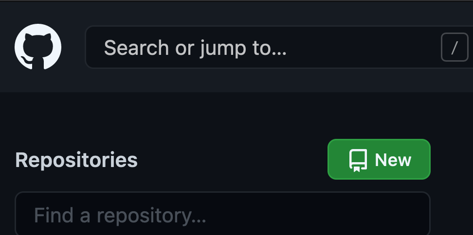
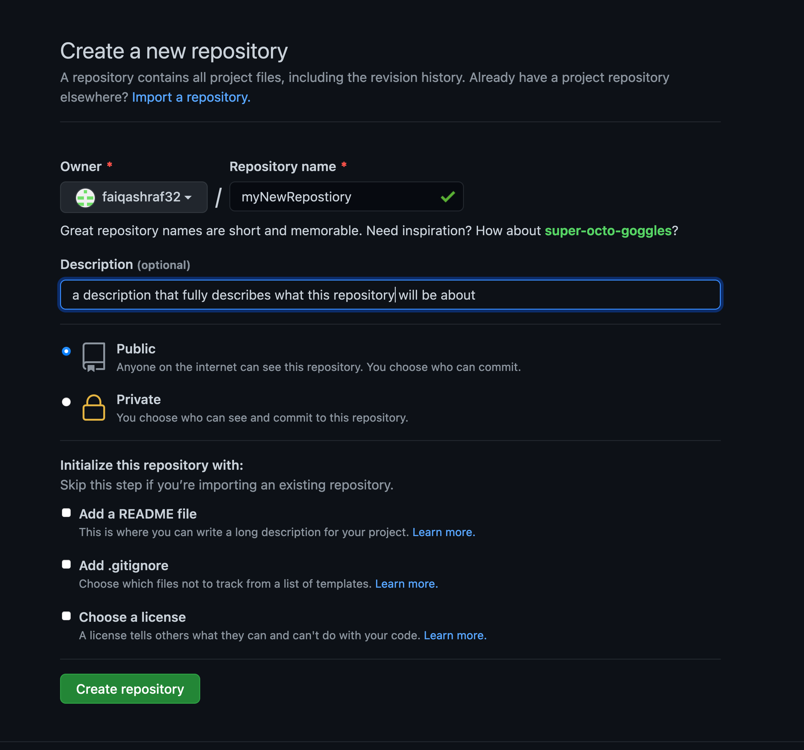
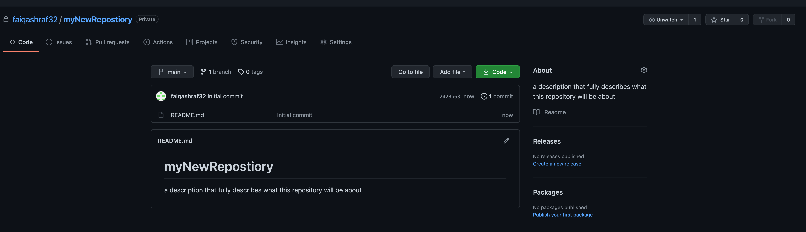

Lesson 2-1
Setting up a Repository on GitHub.com
It is extremely easy to setup a Repository on the GitHub website. It is so easy in fact that I won't even bother explaining how to do it on terminal, because the web interface is far superior. You can also set one up in GitHub desktop and that is also self-explanatory too, so it won't be covered here. Now let's get you set up!
- Navigate to GitHub.com (or your enterprise version)
- Login to your GitHub Account (or create one if needed)
- On the homepage (github.com), click the button on the top left corner called "New". (see Figure 2A)  Figure 2A: New Repository button.
- Fill out the necessary fields for the Repository:
- Repository Name
- Description
- Public/Private (1)
- Add a README file (2)
- Click the "Create Repository" button once every field aforementioned is filled in and valid. (see Figure 2B)  Figure 2B: Create New Repository button.
- You should be redirected to a page that looks like Figure 2C.  Figure 2C: You should be on a page that looks like this after creating your repository.
BAM! We are done! Wasn't that easy? Now here are the caveats for some of the attributes you filled out:
(1) - It is important that you make your Repository private if you are a student using it for school work,
or for an organization who does not want to share code from it's development! Public repositories are meant for
people to share and access for open-source software, which is software that is free and open to the public
to use. Especially in the case of a student, if you make it public, anyone can view your code and copy it, which is considered cheating in most coding class syllabi.
(2) - README.md files tell the user what the repository is about. I would suggest you fill this out so
that any outsider can get a better idea of what the heck you are doing, especially if you choose
to make your repository public.